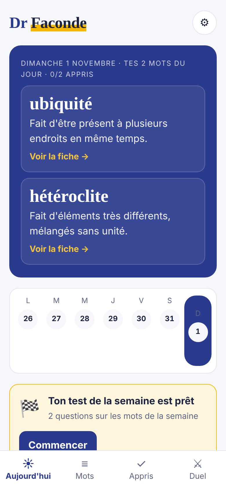
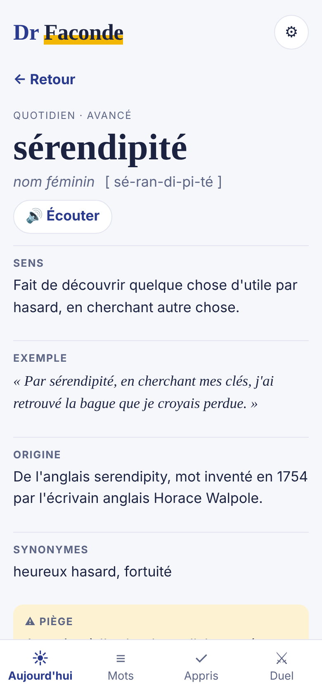
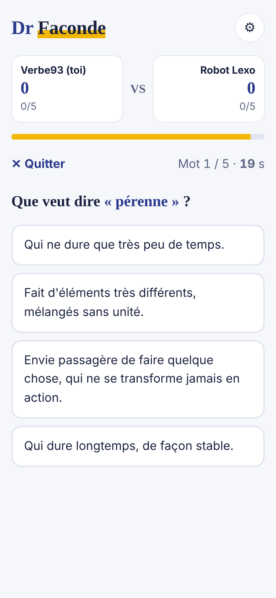

Des mots qui ont du style.
Dr Faconde t'apprend chaque jour des mots utiles mais peu courants : leur sens, leur origine, leur orthographe, un exemple et les pièges à éviter. Pour parler avec plus d'aisance, à l'école, au travail ou entre amis.
Bientôt sur Android · version de test en coursTes mots du jour
Un, deux ou trois mots par jour, à ton rythme. Chacun a sa fiche complète, avec la prononciation à écouter.
Des fiches vérifiées
Origine et anecdotes sont vérifiées avec des sources citées. Quand une anecdote n'est pas certaine, l'appli le dit.
Le test du dimanche
Chaque semaine, un petit test sur les mots découverts, pour les retenir pour de bon.
Des duels
Affronte d'autres joueurs en direct sur 5 mots, ou entraîne-toi contre le robot. Pas de chat : seuls les pseudos sont visibles.



Une question, une idée ?
Écris-nous à lartdesmots.app@gmail.com. Tu peux aussi donner ton avis directement depuis l'appli.